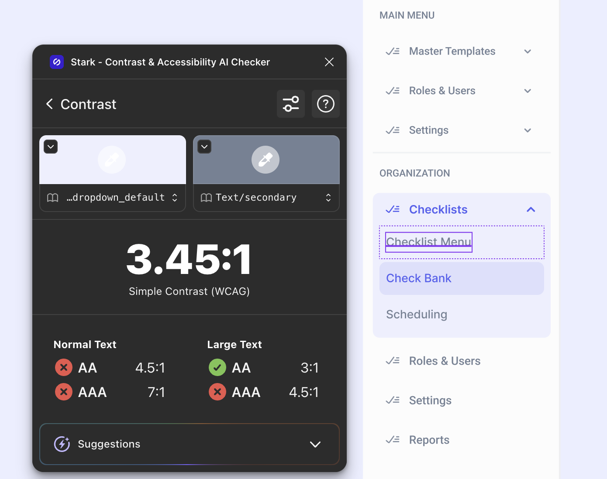
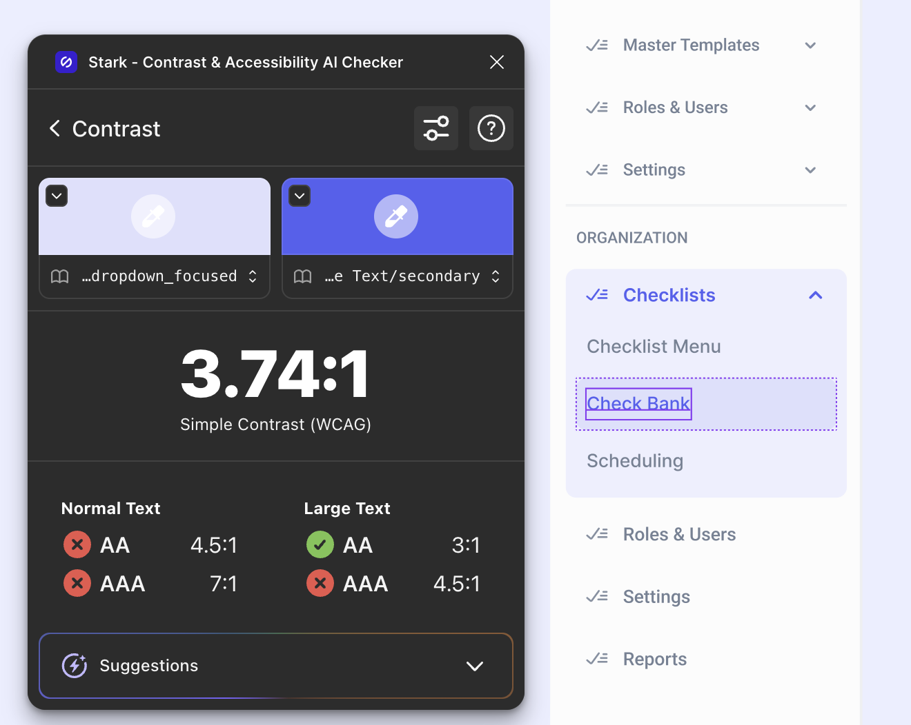
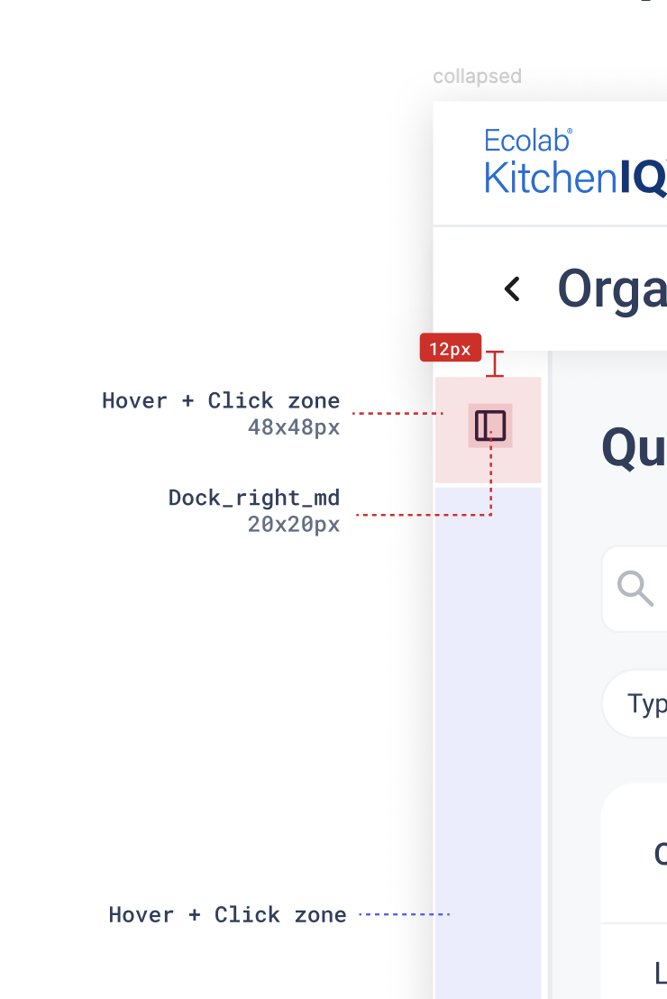

Improved the nav’s performance against the WCAG accessibility standards
Almost every admin task in KitchenIQ starts in the side nav. I audited it against WCAG 2.1 AA with Stark. The selected state failed, and so did the items around it.


I rebuilt the nav with atomic design. Once the smallest pieces passed contrast, everything built from them passed too, with no screen-by-screen re-checks.
